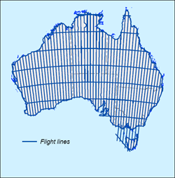
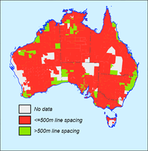

EXPLANATORY NOTES
The ternary radiometric image
shows the concentrations of the radioelements potassium (K), uranium (U)
and thorium (Th) at the Earth's surface as measured using the airborne
gamma-ray spectrometric method. The image is a false colour composite
using the colours red, blue and green to represent potassium, uranium
and thorium, respectively. These primary colours are mixed in the same
proportions at each point on the map as the concentrations of the
radioelements. Thus white areas have high concentrations of all the
radioelements and dark areas have low concentrations. Areas high in K
only appear red, and areas high in U and Th but low in K appear
turquoise (a mixture of green and blue). So this representation of the
data is useful for viewing the concentrations of all three radioelements
in a single image.
The distribution of the radioelements reflects the geochemistry and mineralogy of bedrock and regolith materials. K, U and Th precipitate late in the igneous and volcanic crystallisation sequence. Thus felsic igneous and volcanic equivalents are usually high in these elements and mafic rocks low. A general increase in K, U and Th with increasing bedrock silica content is usually observed. Surface weathering modifies the distribution of these elements, and their concentration in weathered material can differ significantly from fresh bedrock. K is often leached from highly weathered bedrock, whereas U and Th are retained by association with resistate minerals, clay and oxides in the weathering profile.
The airborne gamma-ray spectrometric data used to compile this map were acquired by Geoscience Australia and State and Territory Geological Surveys over a period of about 40 years. During this period there were significant changes in the technology and techniques used to estimate the radioelement concentrations. As a result, the radiometric survey data were not all registered to the same baseline. To solve this problem, Geoscience Australia commissioned UTS Geophysics Pty Ltd to conduct an Australia-wide Airborne Geophysical Survey (AWAGS) to be used to establish a consistent radioelement baseline for Australia.
The survey was funded under the Australian Government's Onshore Energy Security Program with the flying phase of the survey completed in December 2007 and the final processed radiometric data delivered in June 2008. The survey covers the entire continent with north-south flight lines spaced 75 km apart, and east-west tie lines spaced 400 km apart (see Figure 1). Gamma-ray spectrometric data, acquired at a nominal 80 metre terrain clearance along the flight lines, was processed to be consistent with an international baseline established by the International Atomic Energy Agency. The final estimates of the radioelement concentrations along the survey lines comprise the new Australian radioelement baseline.
The radiometric data contained in the National Airborne Geophysical Database have been levelled to the new baseline by minimising both the differences in radioelement concentration estimates between surveys (where these surveys overlap) and the differences between the surveys and the AWAGS traverses (where these overlap) using an enhancement of the method described by Minty (2000).
 Figure 1 - Completed flight lines |
 Figure 2 - Airborne gamma-ray spectrometric survey coverage |
This edition of the Radiometric Map of Australia has been produced from 600 individual survey grids that have been matched and merged into composite K, U and Th grids over Australia at 100 metre resolution. The data are from surveys flown by Geoscience Australia, and surveys flown under contract to Geoscience Australia and the State and Territory Geological Surveys. The source data are used with their permission. The surveys were flown with a range of line spacings (see Figure 2), flying heights, and measurement accuracies (Percival, 2010).
Data was supplied by: Geoscience Australia; Department of Industry and Investment, New South Wales; Department of Primary Industries, Victoria; Department of Employment, Economic Development and Innovation (DEEDI), Queensland; Department of Primary Industries and Resources, South Australia; Department of Mines and Petroleum, Western Australia; Department of Infrastructure, Energy and Resources, Tasmania; and the Department of Resources, Northern Territory. Most of the data were acquired at an altitude of 100 metre or less along lines spaced 500 metre apart or less.
For each of K, U and Th, individual surveys were gridded using a cell size of approximately one-fifth of the survey line spacing, with some grids subjected to micro-levelling (Minty, 1991). The grids were levelled to the AWAGS baseline, as described earlier, and then low-pass filtered using a 7-point, degree-3 Savitzky-Golay filter (Savitzky and Golay, 1964). K, U and Th merged grids were created by interpolating each survey grid onto a regular grid with a cell size of 3.75 seconds of arc using the minimum curvature method of Briggs (1974), and the grid boundaries seamlessly feathered (Minty, 2000). The final grids were then reprojected to the Lambert Conformal Conic projection with a cell size of 100 metre. For imaging purposes, concentrations were normalised to a 0-255 range through histogram equalisation.
REFERENCES
Briggs, I.C., 1974,
Machine contouring using minimum curvature: Geophysics, 39,
39-48.
Minty, B.R.S., 1991,
Simple micro-levelling for aeromagnetic data: Exploration
Geophysics, 22, 591-592.
Minty, B.R.S., 2000,
Automatic merging of gridded airborne gamma-ray spectrometric
surveys: Exploration Geophysics, 31, 47-51.
Percival, P.J., 2010, Index of Geophysical Surveys, (Eleventh Edition):
Geoscience Australia Record 2010/013.
Savitzky, A., and Golay, J.E., 1964,
Smoothing and differentiation of data by simplified least
squares procedures: Analytical Chemistry, 36,
1627-1639.
We thank Fugro Airborne Surveys for allowing the inclusion of some of their survey data in Western Australia.
Compiled by the Continental Geophysics Project, Geoscience Australia. Data processing by R. Franklin, P.R. Milligan, B.R.S. Minty and P.J. Percival. Image enhancement and index maps by P.R. Milligan, P.J. Percival and L.M. Richardson.
It is recommended that this map be referred to as: Minty, B.R.S., Franklin, R., Milligan, P.R., Richardson, L.M. and Wilford, J., 2010., Radiometric Map of Australian (Second Edition), scale 1:5 000 000, Geoscience Australia, Canberra.
The composite K, U and Th radiometric grid data at 100 metre cell sizes are available for free download via the internet using Geoscience Australia’s Geophysical Archive Data Delivery System (GADDS) at: http://www.geoscience.gov.au/gadds
Further information can also be found on the Internet at: http://www.ga.gov.au/minerals/research/national/radiometric/
Published by Geoscience Australia, Department of Resources, Energy and Tourism, Canberra, Australia. Issued under the authority of the Federal Minister for Resources, Energy and Tourism.
 © Commonwealth of Australia (Geoscience Australia) 2010.
© Commonwealth of Australia (Geoscience Australia) 2010.
This material is released under the Creative Commons Attribution 3.0 Australia Licence.http://creativecommons.org/licenses/by/3.0/au/
Further information may be obtained by contacting copyright@ga.gov.au
Copies of this map may be downloaded from the
Geoscience Australia internet site at:
http://www.ga.gov.au, or by
contacting:
Sales Centre - Geoscience Australia
GPO Box 378 Canberra, ACT 2601
Phone (02) 6249 9966
Facsimile (02) 6249 9960
Email:
sales@ga.gov.au